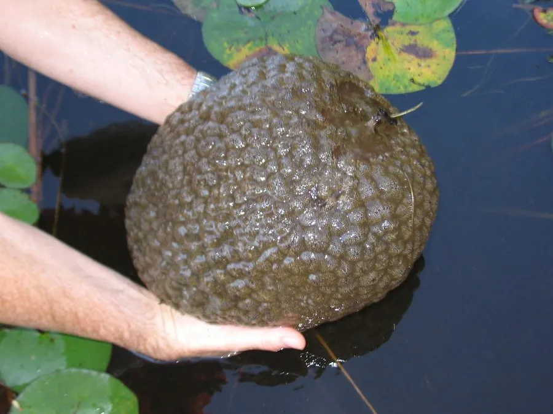

其他无脊椎动物 · 动物界
大聚苔藓虫 Pectinatella magnifica

形成胶质大团的常见淡水苔藓虫，群体可长到足球大小，原产北美，被引入欧洲和亚洲后成为入侵物种。
- 分类
- 门苔藓动物门纲被唇纲目羽苔虫目科聚苔藓虫科属聚苔藓虫属
- 栖息环境
- 静水湖泊、池塘和缓流河段，附着在水下物体上
- 地理分布
- 原产北美，现扩散至欧洲和亚洲部分地区
- 保护级别
- 暂无评估；在多地被视为入侵物种
物种志
大聚苔藓虫的群体呈胶质团块状，表面有许多细小的虫体，群体可以长到拳头到足球大小，甚至更大，附着在水中的树枝、石块和码头设施上；活体呈淡黄、淡绿或粉红色，质地柔软滑腻，看起来像一团果冻。
它生活在静水湖泊、池塘和缓流河段，靠虫体伸出的触手冠滤食浮游生物和有机颗粒。群体由许多个体组成，每个个体都参与滤食和繁殖。大聚苔藓虫原产北美，20 世纪被引入欧洲，后又传入亚洲，由于繁殖力强、缺乏天敌，在部分水域大量繁殖，附着在管道、渔网和养殖设施上，成为入侵物种。防治主要靠物理清除和设施维护，同时要防止随水流和水生植物扩散；它也可作为水体富营养化的指示生物之一。
形态与习性
- 食性靠触手冠滤食浮游生物和有机颗粒
- 群体胶质团块可长到足球大小
- 形态群体柔软滑腻，呈淡黄、淡绿或粉红色
- 繁殖群体由许多个体组成，繁殖力强
- 入侵原产北美，扩散至欧洲和亚洲，成为入侵物种
- 影响附着管道、渔网和养殖设施，造成堵塞
趣味知识
- 大聚苔藓虫的群体像一团果冻，最大可长到足球大小。
- 它原产北美，如今在欧洲和亚洲部分水域成为入侵物种。
- 在水下管道和渔网上，常能看到它附着生长形成的胶质团块。